【サカつくTV #11】Ver2.3アップデート情報まとめ｜ロードマップ・WPS・BOXガチャ・新ガチャ
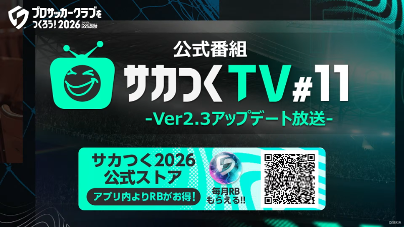
公式番組「サカつくTV #11」では、2026年9月30日（水）実装予定のVer2.3アップデートに加え、10月のVer2.4、12月予定のVer3.0、さらに2027年6月のロスターアップデートへ向けたロードマップまで公開されました。本記事では、番組内で発表された内容を「Ver2.3で実装される内容」と「今後の予定」へ分けて整理します。
本記事は公式番組内の発表内容と公開スライドをもとに作成しています。アップデート後の細かな仕様や数値は、ゲーム内お知らせ・監督ノート・今後公開される公式情報もあわせてご確認ください。

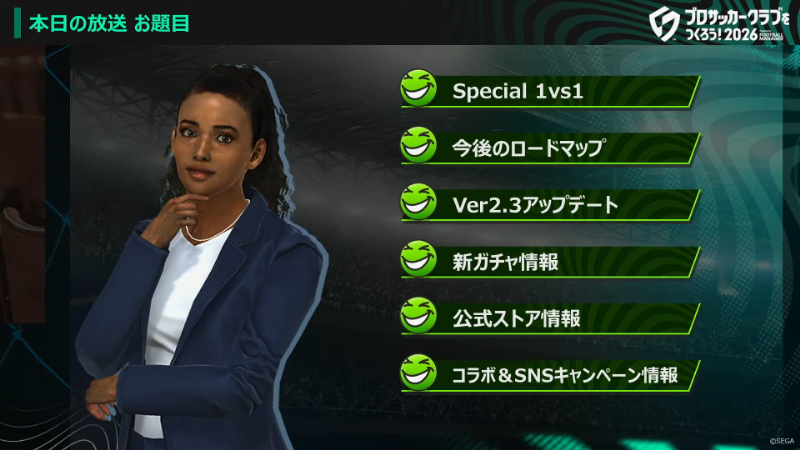
- Special 1vs1はVer2.3から毎週開催→隔週開催、1日3回→4回へ変更。Ver2.4以降は不定期イベント化を検討
- 10月のVer2.4では、サカつくモード選手を選抜登録できるようにする予定
- 12月予定のVer3.0では「超覚醒」「育成特化 新サカつくモード」「ロスターアップデート」を予定
- 限定スカウト終了後の限定メダルは、今後SP選手スカウトメダルへ変更
- WPSはLEGEND帯追加・レーティング制・対戦相手4名同時表示へ大幅改修
- サカつくモード周回と連動するBOXガチャイベントを近日開催予定
- フランスプレミアムSP選手スカウトと、10月7日開始予定の特練カードガチャを発表
- 新番組「サカつくTV アディショナルタイム」は10月15日（木）20:00から初回配信予定
Special 1vs1を変更｜Ver2.3から隔週＋昼開催を追加
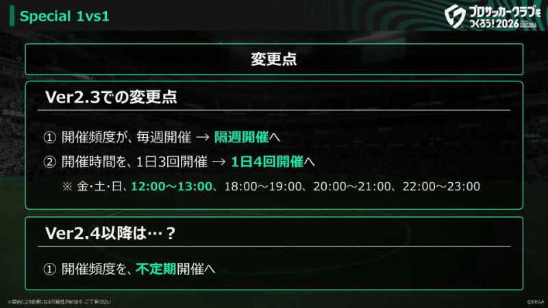
番組冒頭では、ユーザーから多くの意見が寄せられているSpecial 1vs1について今後の運用方針が説明されました。9月30日のVer2.3から、開催頻度と1日の開催時間が変更されます。
開催回数が減ることで受け取り機会が減る報酬については、今後ほかのイベントを考える中で検討すると説明されました。現時点で具体的な移行先や報酬量が確定したわけではありません。
今後のロードマップ｜「育成の深み」を軸にサカつくモードを再構築

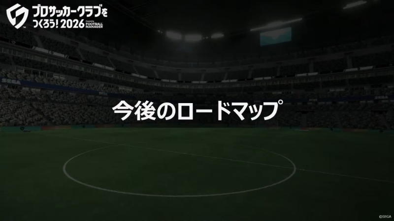
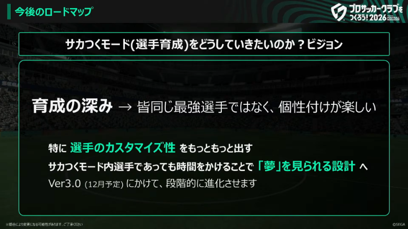
今後のサカつくモードで掲げられたキーワードは「育成の深み」です。開発側は、全員が同じ最強選手を使う状態ではなく、選手のカスタマイズ性を高め、好きな選手・サカつくモード選手でも時間をかけて育てれば夢を見られる設計を目指すと説明しました。
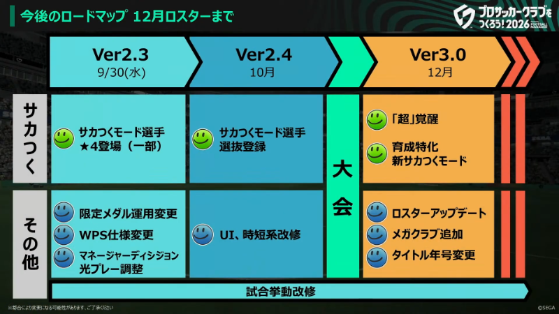
9/30
10月
12月
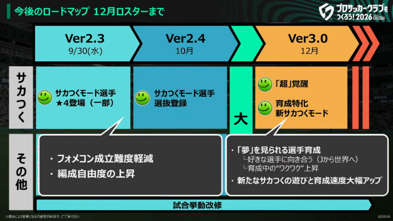
Ver2.4｜サカつくモード選手を選抜登録できるように
現在はSP選手のみが対象となっている選抜登録について、10月予定のVer2.4ではサカつくモード選手も登録できるようにする予定です。Ver2.3で登場する★4選手と組み合わせることで、国籍染めやフォーメーションコンボの不足ポジションを補う選択肢が増えることが期待されます。
小さく表示している画像も、タップすると原寸に近いサイズで確認できます。


Ver3.0｜育成特化の新サカつくモードと「超覚醒」
12月予定のVer3.0では、「超覚醒」と「育成特化 新サカつくモード」が大きな柱になります。新モードは「新興クラブを立ち上げ、数々の試練を乗り越えアジアの頂点へ」というテーマで、週ごとにトレーニングメニューを構築していくような遊びを開発中。SP選手の育成速度を上げる狙いも示されました。
さらに、現在は自動で動くスカウトについても、Ver3.0の環境ではスカウトマンを自分で選択し、アジアに強い・リストアップが得意・引き抜き狙いなど、個性を持ったスカウトを使い分ける方向で開発が進められています。
番組内では「現行のサカつくモードは廃止ですか？」という質問に対して否定されており、既存モードと新モードをどう両立させるかは今後説明するとされています。現時点で「Ver3.0から完全置き換え」と断定しないよう注意が必要です。
2027年6月までの長期ロードマップも公開
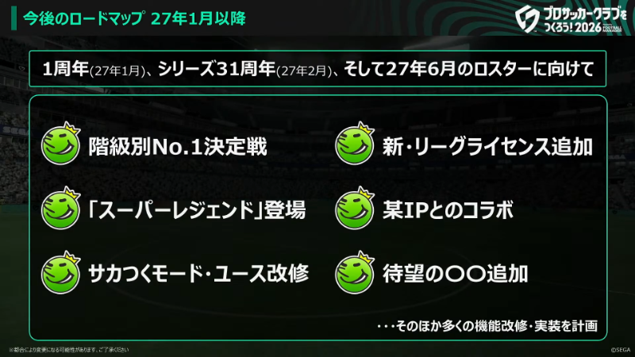
対戦イベント・大会系の新展開を計画
ペレに匹敵する選手を検討
育成環境をさらに改善
新しいリーグ展開を予定
詳細は今後発表
内容を伏せた新要素も予告
これらはすべて2027年1月に一度に実装されるわけではなく、1周年（2027年1月）・シリーズ31周年（2月）・2027年6月ロスターへ向けて段階的に追加していく計画です。12月のロスターアップデートでは、タイトル表記も2026から2027へ切り替わる予定と説明されました。
「共創と共感」を掲げ、ユーザーとのコミュニケーションを強化


新番組「サカつくTV アディショナルタイム」は、アップデートの一次情報を発表する通常のサカつくTVとは役割を分け、監督から寄せられた質問や意見に回答するコミュニケーションの場としてスタートします。初回は10月15日（木）20:00から生放送予定です。
Ver2.3アップデート｜9月30日実装予定

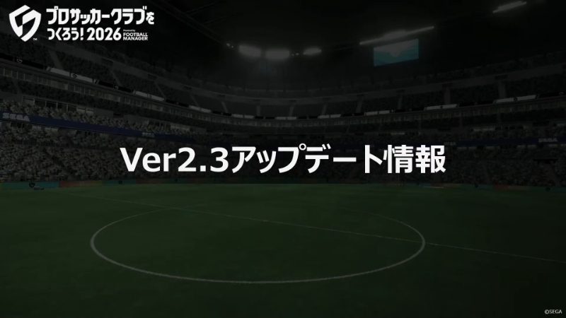
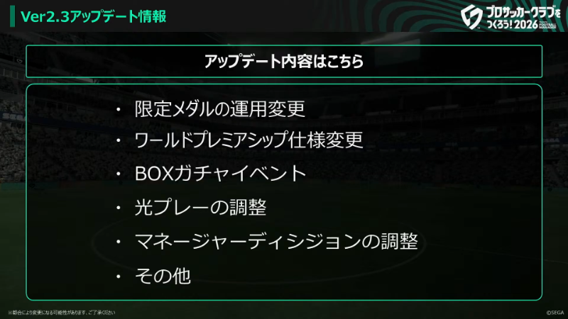
Ver2.3のアップデート日は2026年9月30日（水）です。番組内では、限定メダル・WPS・BOXガチャ・光プレイ・マネージャーディシジョンなどがピックアップされました。
今回はロードマップなど番組全体の情報量が多いため、アップデート内容を絞って紹介したと明言されています。利便性改善などを含む残りの変更は、後日公開のディレクターレターやゲーム内お知らせ等で確認する必要があります。
限定メダルの運用変更｜今後はSP選手スカウトメダルへ
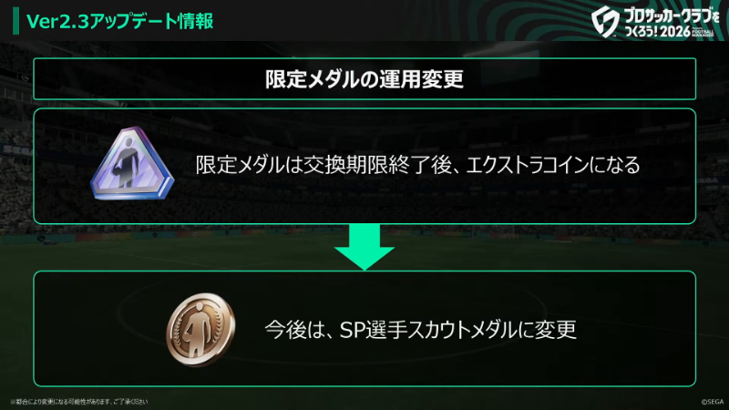
一部の限定スカウトでは、開催期間終了後に限定メダルがエクストラコインへ変換されていました。今後の対象スカウトでは、これをSP選手スカウトメダルへ変更します。

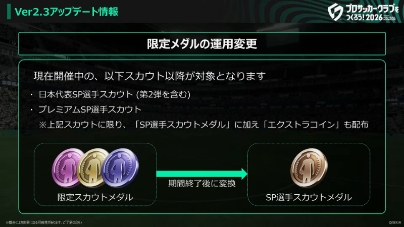
発表時点で開催中のスペインプレミアムSP選手スカウトと日本代表SP選手スカウトについては、告知タイミングを考慮し、通常変換されるエクストラコインに加えてSP選手スカウトメダルも獲得できる特例対応が行われます。今後のスカウトはエクストラコインではなくSP選手スカウトメダルへ切り替わります。
WPS仕様変更｜LEGEND帯・レーティング制・4名同時表示
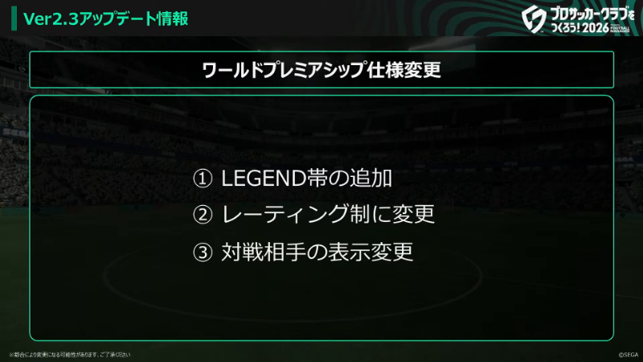
MASTER1の上に「LEGEND帯」を追加
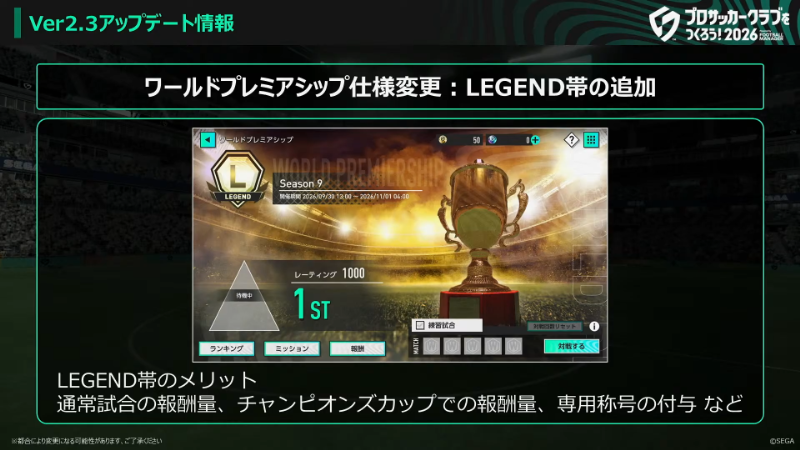
MASTER1のさらに上にLEGEND帯が追加されます。LEGEND帯では、通常試合の報酬、専用称号、チャンピオンズカップ報酬の強化などが予定され、今後もWPSを頑張る価値を高める仕組みを追加していく方針です。
Ver2.3は「次の昇降格でLEGEND帯へ上がれるようにする」ためのアップデートで、アップデート直後からLEGEND帯の監督が存在するわけではありません。番組では、初めてLEGEND帯が生まれるのはVer2.4のタイミングと補足されています。
ポイント制からレーティング制へ
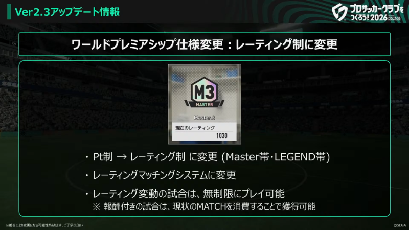
これまでのポイント制では、対戦カウントを消費して試合結果をポイント化し、その合計を積み上げていました。変更後は、レーティングの変動自体に対戦カウントを消費しない方式になります。運営側は、対戦回数を増やすほど有利になる仕組みから、純粋な強さで評価される世界へ変えたいと説明しています。
なお、試合報酬の獲得には従来どおり対戦カウントを使用します。またアップデート時には初期レーティングが設定されるため、開始直後は実力差の大きいマッチングが発生する可能性があります。
対戦相手は4名を同時表示

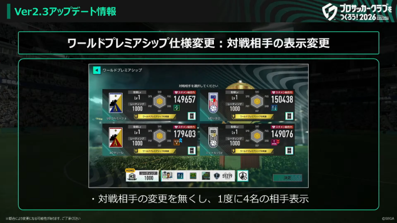
対戦相手を1人ずつ変更する方式をなくし、一度に4名の対戦相手を表示します。表示された相手のレーティング・強さ・ポリシーを確認しながら挑戦相手を選べるため、現在より比較しやすいUIになります。
BOXガチャ・光プレイ・マネージャーディシジョン・選抜ロック
新イベント「BOXガチャ」｜サカつくモード周回と連動
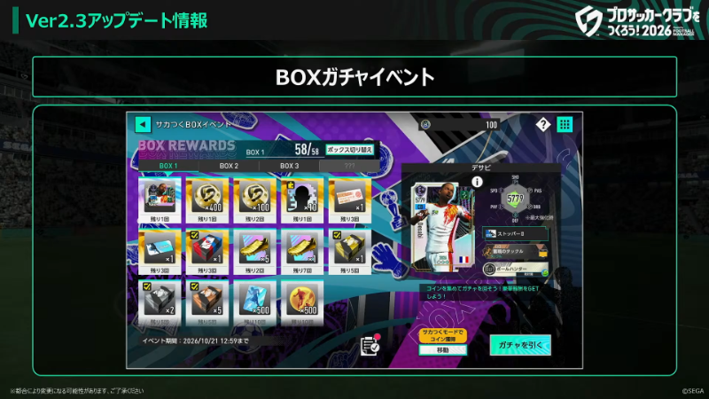
Ver2.3アップデート直後ではなく近日開催予定の新イベントです。サカつくモードをプレイし、ボーナスカウントを消費した際に入手できるアイテムを使ってイベント専用ガチャを引きます。GBを使う通常の選手ガチャとは別物です。
ループBOX自体は繰り返せますが、イベント参加に使うボーナスカウントの回復は有限です。番組内でも、GBなどを使わない限り完全な無限周回という意味ではないと補足されています。
光プレイ｜発生頻度を下げる代わりに価値を上げる
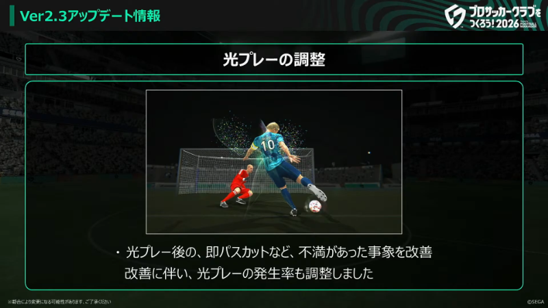
光プレイ発生後、パスがつながっても直後にボールを失うなど「発生した価値を感じにくい」挙動を改善します。一方で試合バランスを維持するため、光プレイが発生する判定条件を厳しくし、発生頻度を下げる方向です。イメージとしては「回数は減るが、発生した時の価値を高める」調整です。
マネージャーディシジョン｜発生率はそのまま、成功時の価値を向上
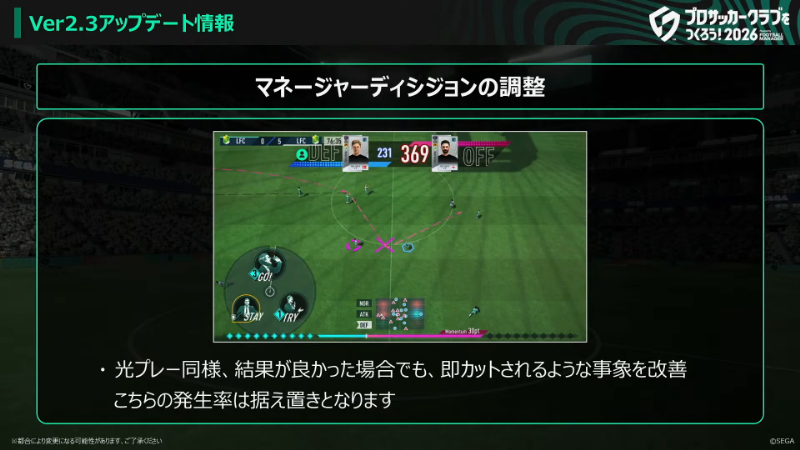
マネージャーディシジョンは光プレイと異なり、発生率を維持したまま効果を強化します。成功直後にすぐボールを失いにくくする方向の調整で、以前よりマネージャーディシジョンに勝つ意味を大きくします。ただし、一定時間ずっとボールを失わない保証ではありません。
選抜チームに「ロック」機能を追加

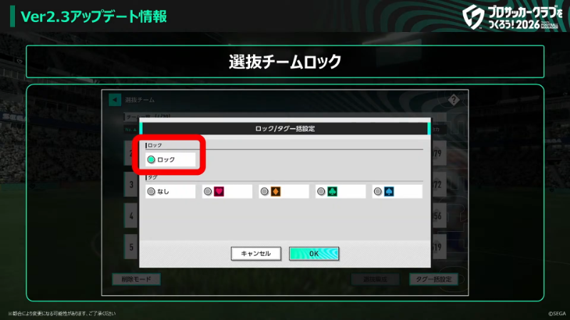
要望の多かった選抜チームのロック機能も追加されます。大切な編成を誤操作で削除・変更してしまうリスクを減らす、実用性の高い改善です。
新ガチャ情報｜フランスSP・★4サカつく選手・特練カード

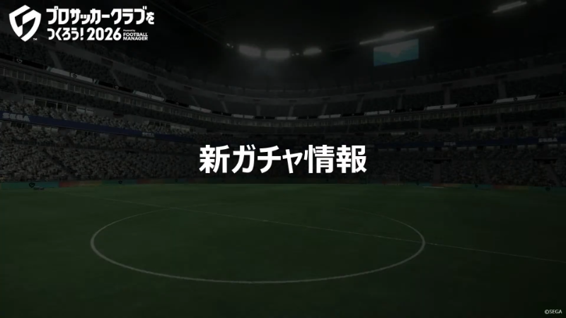
フランスプレミアムSP選手スカウト
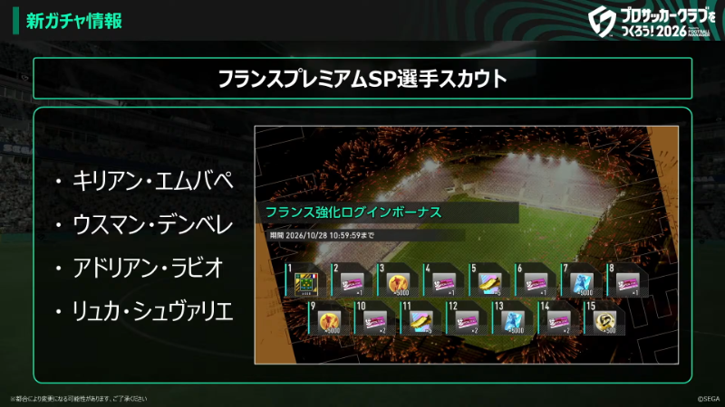
あわせてフランス強化ログインボーナスも実施され、新SP選手が活躍するフォーメーションコンボも用意されます。番組では画面左上のアイコンについてムービングを示唆するやり取りがありましたが、確定情報としての詳細説明はされていないため、本記事ではポリシーを断定しません。
今回のスカウトから、先ほど紹介した限定メダル→SP選手スカウトメダルの新運用が適用されます。
サカつくモード内の一部選手が★4で登場
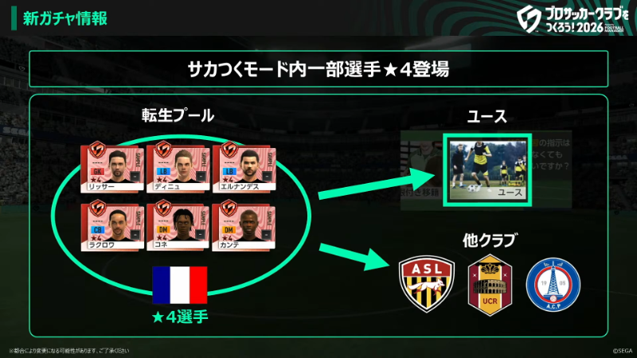
Ver2.3では、サカつくモード内の一部フランス国籍選手が★4で登場します。番組では開発用語として「転生プール」という仕組みを使って説明されました。
既存の選手がアップデート直後に★3→★4へ直接変化するわけではありません。選手が引退して転生プールへ入り、その後ユースや他クラブに新たに登場するタイミングで★4選手が生まれるイメージです。★4はパラメータが強化され、一部は特殊なスキルを持つと説明されています。
10月7日～スペシャルピックアップ特練カードガチャ
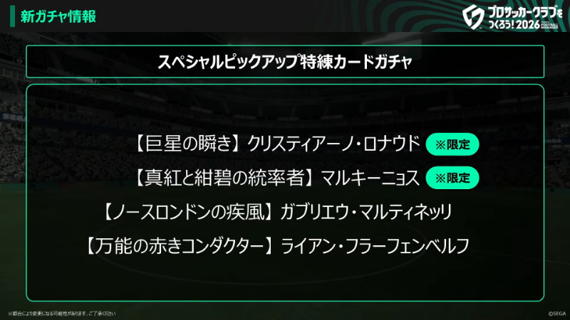
このスペシャルピックアップ特練カードガチャの専用メダルも、開催期間終了後に恒常の特別練習カードガチャメダルへ変換される予定です。
公式ストア情報｜ストア限定RB・毎月プレゼント・限定パック

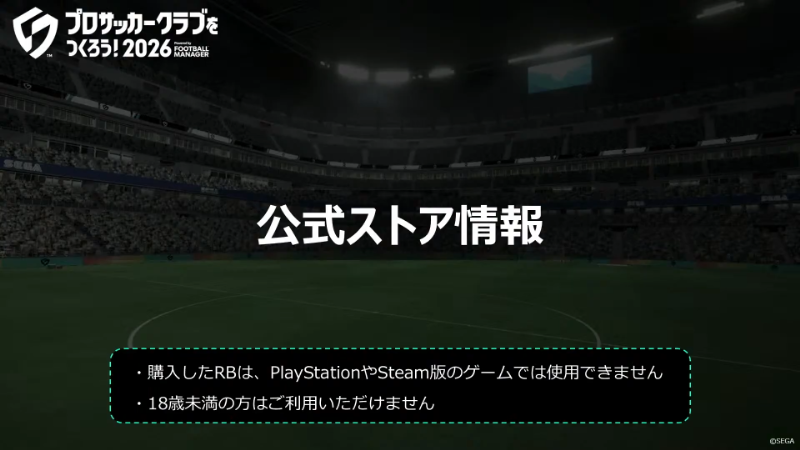

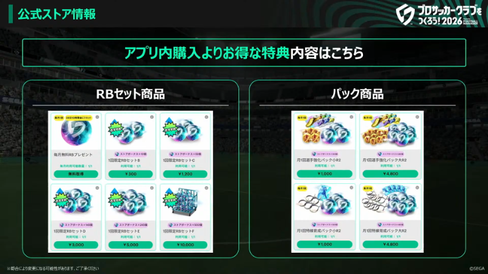
公式ストアでは、購入時にストア限定ボーナスの無償RBが付く商品に加え、毎月1回の無料プレゼント、1回限定パックなどが用意されています。限定パックでは★3確定SP選手スカウトチケットなどを含むアイテムを獲得でき、毎月プレゼントには育成アイテムも追加されています。
ピザーラ×サカつく2026｜コラボセットとSNSキャンペーン

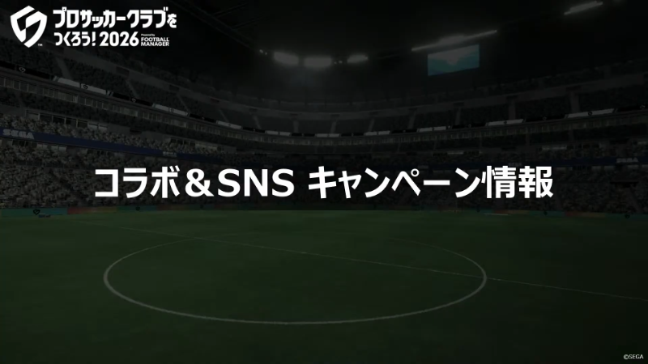
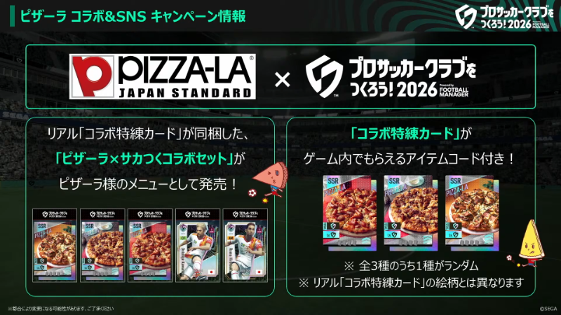
開催中の「ピザーラ×サカつくコラボセット」は、好きなピザと人気サイドメニューにリアル特練カードを組み合わせたセット。カード裏面のアイテムコードを使用すると、ピザをモチーフにしたゲーム内のオリジナルコラボ特練カードを獲得できます。コラボメニューは11月1日（日）までの期間限定予定です。
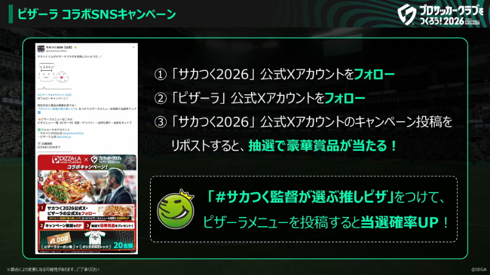
SNSキャンペーンは9月30日までと案内されています。記事公開時点で残り期間が短いため、参加予定の監督は忘れずに確認しておきましょう。
アディショナルタイムは10月15日、サカつくTV #12は10月下旬

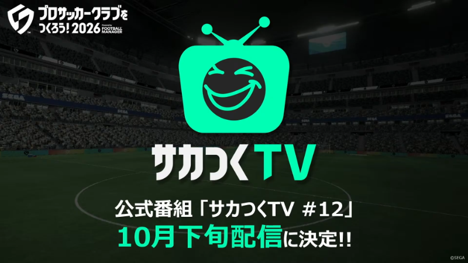

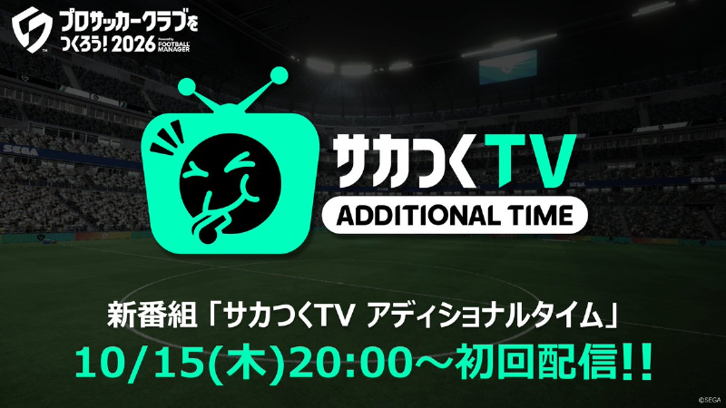
サカつくTV #12は2026年10月下旬に配信予定。Ver2.4のアップデート内容に加え、今回公開したロードマップの進捗状況、11月に予定されている公式大会の続報などを紹介する予定とされています。
その前に、10月15日（木）20:00から「サカつくTV アディショナルタイム」が生配信予定です。監督からのおたより・質問への回答を中心とした番組になるため、今回のロードマップで気になった内容を直接届けられる機会になりそうです。
ソニオTVのオレ的注目ポイント
今回のVer2.3だけを見ると、限定メダルやWPS、試合挙動などの改善が中心です。ただ、ゲーム全体への影響で考えると重要なのは★4サカつくモード選手 → Ver2.4の選抜登録 → Ver3.0の超覚醒・新育成モードという流れ。SP選手だけでなく、サカつくモードで獲得・育成した選手を本気で編成へ組み込む方向へ舵を切ったことが最大の発表だと思います。
限定メダルが期間終了後にエクストラコインではなくSP選手スカウトメダルへ変わることで、「天井まで引けないから限定スカウトを触りにくい」という心理的なハードルはかなり下がりそうです。今回のフランススカウトから適用されるため、実際の使い勝手は今後確認していきたいポイントです。
レーティングの変動自体には対戦カウントを消費しなくなるため、従来のポイント積み上げ方式から大きく変わります。一方で報酬獲得用のカウントは残るため、完全にプレイ回数が無関係になるわけではありません。アップデート直後のレーティングの動きとマッチングは要チェックです。
どちらも「せっかく発生・成功したのに直後にボールを失う」不満へ対応する変更です。特にマネージャーディシジョンは発生率を維持したまま価値を上げると説明されているため、実装後はSPECIAL 1vs1やWPSで試合展開がどの程度変わるか確認したいところです。
Ver2.3ではまずフランス国籍の★4選手が転生プールへ追加され、Ver2.4ではサカつくモード選手を選抜登録できる予定です。今までSP選手だけでは埋めづらかったポジションを補えるなら、国籍条件があるフォーメーションコンボの編成自由度が一気に上がる可能性があります。
まとめ｜Ver2.3は「12月の大型改革」へつながる第一段階
サカつくTV #11では、9月30日のVer2.3アップデートだけでなく、10月のVer2.4、12月予定のVer3.0、さらに2027年6月までを見据えたロードマップが公開されました。
直近では、限定メダルの運用変更、WPSのLEGEND帯・レーティング制、BOXガチャ、光プレイ・マネージャーディシジョン調整、選抜チームロックなどが注目点です。そして中長期では、サカつくモード選手を育てて選抜へ組み込む流れが本格的に強化されます。
特にVer3.0で予定される「超覚醒」「育成特化 新サカつくモード」「ロスターアップデート」は、現在の育成・編成環境を大きく変える可能性があります。今後もサカつくTV #12やアディショナルタイムで進捗が発表される予定なので、追加情報が出た段階で改めて整理していきます。
本記事はサカつくTV #11の番組内発表と公開スライドをもとに作成しています。ロードマップや開発中画面に含まれる内容は変更される可能性があります。Ver2.3で実装される内容と、Ver2.4・Ver3.0・2027年以降に予定されている内容を混同しないようご注意ください。実装後の正確な仕様・開催期間・報酬・ガチャ詳細はゲーム内のお知らせや監督ノートをご確認ください。
© サカつく2026攻略DB / ソニオTV